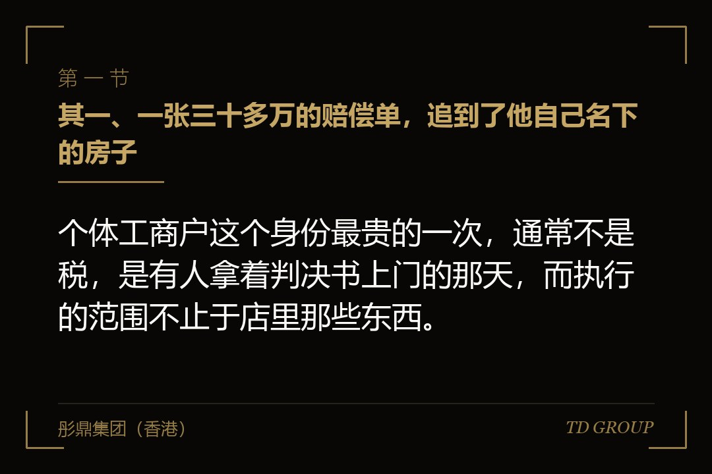
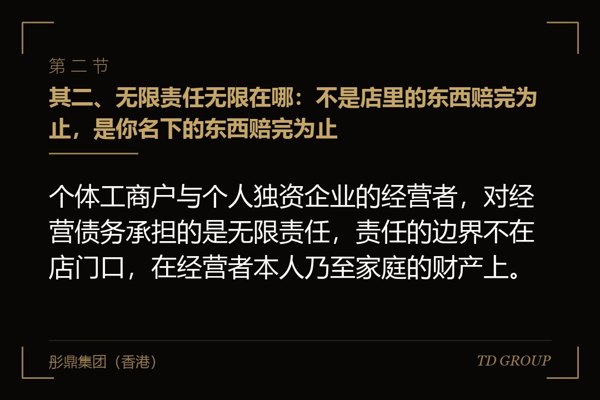
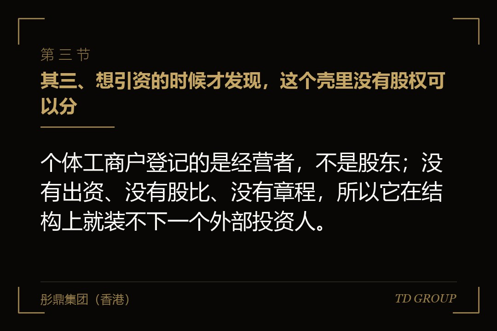

其一、一张三十多万的赔偿单，追到了他自己名下的房子

结论先行：个体工商户这个身份最贵的一次，通常不是税，是有人拿着判决书上门的那天，而执行的范围不止于店里那些东西。
假设有个做建材配送的老板，二零一四年办的营业执照，写的是个体工商户，做到第十一个年头，四台车、九个人、一年流水两千来万。这些年他也想过要不要换成公司，每次都被同一句话挡回去：现在这样挺好，换了还多一道账。
去年夏天出了一件事。一批货压坏了客户仓库的地坪，对方索赔三十多万，谈不拢，起诉了。判决下来他才反应过来一件事：营业执照上的经营者是他本人，被告也是他本人，执行的时候法院看的不是店里有什么，是他名下有什么。
那套房子是他和爱人二零一六年买的，登记在两个人名下。这个个体户从头到尾是夫妻俩一起在做，收入进的也是同一个账户，最后按家庭经营认定。他事后说了一句话：我以为我赔的是这个店，原来赔的是我这个人。
问题不在于他运气不好。问题在于这个结果在办登记的那一天就定下来了，只是过了十一年才兑现。这十一年里没有任何一个环节会提醒他，因为这不是出错，这就是这个身份本来的规则。
其二、无限责任无限在哪：不是店里的东西赔完为止，是你名下的东西赔完为止

结论先行：个体工商户与个人独资企业的经营者，对经营债务承担的是无限责任，责任的边界不在店门口，在经营者本人乃至家庭的财产上。
《民法典》第五十六条把话说得很直白：个体工商户的债务，个人经营的，以个人财产承担；家庭经营的，以家庭财产承担；无法区分的，以家庭财产承担。《个人独资企业法》的表述是投资人以其个人财产对企业债务承担无限责任。
真正要注意的是那句“无法区分的，以家庭财产承担”。它的意思是，一旦分不清这笔生意是你一个人在做还是全家在做，默认落到家庭财产这一头。而多数夫妻店、父子档、一个账户走全部收支的小生意，本来就分不清。
对照过来，二零二四年七月一日施行的《公司法》规定，有限责任公司的股东以其认缴的出资额为限对公司承担责任。这句话里有两个字很关键：认缴。它不是零，是你自己在章程里写下的那个数字。
所以注册资本不是越大越气派。写一千万，等于给自己签了一张一千万的责任上限；而按《公司法》第四十七条，全体股东认缴的出资额应当自公司成立之日起五年内缴足。换句话说，那个数字既是上限，也是一张有到期日的欠条。
这一条可以当尺子用：把你现在这门生意一年可能出现的最大一笔赔付估个数，再看看你名下有多少东西在这个数的射程之内。两个数一比，换不换壳这件事就不是感觉问题了。
其三、想引资的时候才发现，这个壳里没有股权可以分

结论先行：个体工商户登记的是经营者，不是股东；没有出资、没有股比、没有章程，所以它在结构上就装不下一个外部投资人。
有个场景在小生意里出现得很频繁：做得不错，有人愿意投点钱进来一起干，谈到最后一步卡住了。对方要的是工商登记上的一个百分比和一份股东名册，而这个壳里没有这样东西可以给。
个体工商户的登记事项里没有出资额、没有股权结构，法律上它就是那个自然人在经营。所谓“给你两成”，落到纸面上只能是一份分成协议，而分成协议管不了处分权、管不了退出、也没法在工商登记上体现。投资人真金白银进来，拿不到能被登记确认的权利，多数就不来了。
同一个道理还挡住另外两件事。员工持股在这个壳里做不了——没有股，就没有可以授予的东西；被同行买走也做不成常见的那种买法——买方通常买的是股权，而个体户只能卖资产，那意味着设备、车辆、存货、商标要逐项过户，还要各自处理税。
假设上面那位建材配送的老板去年谈成了一个投资人。对方尽调做完，提出的头一条不是估值，是主体得先换。等到那一刻再动手，清税、登记、许可衔接每一步都要时间，而投资人的耐心通常不按这个节奏走。
所以引资这件事对壳的要求，不是等要用的时候再准备，是要用之前就得已经在那儿。这跟买保险的逻辑是一样的：出险那天才想起来买，就来不及了。
其四、二零二五年七月十五日之后，换壳的办法变了一条
结论先行：多数人还以为换壳必须先注销个体户再新设公司，而自二零二五年七月十五日起，符合条件的个体工商户可以直接办变更登记。
《个体工商户登记管理规定》自二零二五年七月十五日起施行，明确个体工商户可以通过变更登记的方式转型为企业。走这条路的，延续使用原个体工商户的成立日期和统一社会信用代码，登记档案和年度报告并入转型后的企业保留，符合要求的还可以保留原来的字号。
延续成立日期这一点，对做了很多年的小生意价值不小。投标、评级、供应商准入这类场合经常要看经营年限，而按老办法注销再新设，十一年的经营历史会在纸面上归零，新执照上的成立日期就是当天。
这条路有身份上的硬约束：该规定第二十二条明确，原个体工商户经营者应当作为转型后企业的股东、投资人或者合伙人。也就是说，直接变更不能顺手把主体换成另一个人，想让别人当股东，得在转型之后再走股权变动那一步。
还有四种情形走不通直接变更，需要提前自查：被列入经营异常名录或者严重违法失信名单尚未移出的；正在被立案调查或者被采取行政强制措施的；财产被冻结或者被限制办理登记尚未解除的；以及成立不满一年且未报送年度报告的。
前置条件同样要提前准备：结清依法应当缴纳的税款和滞纳金，完成经营者个人所得税汇算清缴和清算申报，并且妥善处理个体工商户存续期间的债权债务和知识产权等财产权利。这三样都不是当天能办完的事。
要提醒的是，个人独资企业不适用上面这套针对个体工商户的规则。它变更为公司在各地登记机关的口径并不一致，有的受理变更，有的要求注销后新设，实际怎么走以当地登记机关的正式答复为准。
其五、能直接变更，不等于什么都能一起搬过去
结论先行：登记主体可以延续，不代表许可、合同、账户、社保和知识产权会跟着自动过来，这几样要逐项确认，漏一项就卡在半路。
市场监管总局等九部门二零二五年六月印发的指导意见，把衔接这一段写得比较细。许可这一头的口径是：工业产品生产许可证、食品生产许可证这类，在有效期内并且经营场所、许可范围等实质审批条件未发生变化的，可以依法延续行政许可并换发新证。
要注意的正是那半句“实质审批条件未发生变化”。很多老板打算借着换壳一起把厂房搬了、把经营范围扩了，这么一动，延续的前提就不成立了，许可要重新走一遍申请流程。所以搬家和换壳这两件事，尽量别挤在同一个月里做。
发票和账户这一头，指导意见提到，采用直接变更方式的原则上保持原有发票额度；银行方面是鼓励银行为符合条件的经营主体提供继续沿用原基本存款账户账号的服务，原征信记录继续有效。
“鼓励”这两个字值得单独看一眼。它是对银行的倡导，不是给你的承诺，具体能不能沿用，还是要拿着材料去开户行问一句。这类地方最容易出现的偏差，就是把文件里的倡导性表述当成了办事窗口的既定结论。
社保按参保状态分两种走法：原来已经以单位形式参保的，办单位基本信息变更；原先以个人身份参保或者没参保的，要办企业社会保险登记。这一项跟工资发放和人员用工是连着的，不能等发工资那天才想起来。
合同和知识产权则要靠自己清一遍。客户合同、租赁合同、供应商框架里通常都有关于主体变更、转让和通知义务的条款，哪些只需书面通知、哪些必须对方同意、哪些干脆要重签，得逐份看过；商标、著作权登记、域名的持有人变更也各有各的手续。
其六、搬迁本身有税，旧债也不会因为换了壳就消失
结论先行：把资产从个人名下转进公司是一次财产转让，税上要按转让处理；而转型前欠下的债，不会因为登记主体变了就停在门外。
先说资产。个体户时期买的设备、车辆、存货、房产、商标，权属多半就登记在经营者本人名下。要让公司真正拥有它们，就得完成一次权属转移，而在税法上这通常被当作一次转让来看待，具体涉及哪几个税种、按什么口径计价，要按当时有效的规定和当地税务机关的执行口径确认，不能凭印象套。
再说税负结构本身的变化。个体工商户与个人独资企业的经营者按经营所得纳税；转成公司之后，公司层面缴企业所得税，经营者从公司领工资按工资薪金所得预扣，分红则按利息股息红利所得处理。这不是简单的高低之分，是计税的层次变了，需要重新算一遍全年的现金安排。
旧债这一头是最容易被想当然的。上面那条前置条件里写着要先妥善处理存续期间的债权债务，意思正是先清干净才让你变，而不是变完就一笔勾销。个人独资企业变更为公司的地方实践中，通常还要求原投资人出具承诺，对企业存续期间的债务继续承担偿还责任。
更要紧的是，有限责任本身也不是铁板一块。《公司法》第二十三条规定，公司股东滥用公司法人独立地位和股东有限责任逃避债务、严重损害公司债权人利益的，应当对公司债务承担连带责任；只有一个股东的公司，股东不能证明公司财产独立于股东自己的财产的，应当对公司债务承担连带责任。
这后半句正好打中从个体户换过来的人最容易犯的毛病：壳换了，收钱付钱的习惯没换，还是那个账户、那张卡、那本流水。一旦被要求证明公司财产独立于自己的财产，举证责任在股东这一边，而账混在一起的时候，这个证明是做不出来的。
同一条还规定，股东利用其控制的两个以上公司实施上述行为的，各公司应当对任一公司的债务承担连带责任。所以老壳留着不注销、新公司与老个体户之间来回走账，本身就是在制造一个将来说不清的局面，而资金往来和关联交易恰恰是引资尽调必查的几项之一。
其七、时点与收口：一张今天就能填完的表
结论先行：换壳的成本几乎完全由时点决定，在没有外部投资人、没有大合同、没有待批资质的时候动，是这件事最便宜的时候。
三个最贵的时点值得记住。有人要投钱的时候才动，清税和登记的节奏赶不上对方的节奏；出了事之后才动，换壳既洗不掉旧债，还可能被认定为在躲债；被列入经营异常名录之后才动，直接变更那条路当场就关上了。
反过来说，生意还平稳、账目干净、许可都在有效期内的那段日子，看上去最没有紧迫感，恰恰是办这件事最顺的窗口。这跟修屋顶是一个道理，晴天才好上房。
华尔街彤鼎俱乐部里有位做了二十多年实业的会员说过一句大意如此的话：小生意做到一定年头，绊住它的往往不是市场，是当年为了省事随手选的那个身份。
下面这七个问题，找张纸写下来就行。一，我这门生意最大的一笔可能赔付大概是多少，我名下有多少东西在这个数的射程内。二，我这个个体户是我一个人在做，还是家里一起在做，收入进的是不是同一个账户。三，我手上的许可证和资质有哪几张，各自的有效期到什么时候。
四，未来十二个月我有没有引资、员工持股或者转让的打算。五，我名下有哪些资产其实是这门生意在用的，房、车、设备、商标各是什么状况。六，我有没有被列入经营异常名录、有没有未结的诉讼或者未缴的税款滞纳金。七，如果决定要换，我打算什么时候动，那段时间是不是刚好没有搬迁和许可到期。
这七问里最难回答的是第二问，因为它逼着人承认公私账目其实分不开；最贵的是第四问，因为答案一旦是“有”，时间表就不由自己定了。
本质上，个体工商户不是一个低级的身份，它在很多阶段是效率最高的选择。真正的问题是它没有出口：它装不下股东，也挡不住债权人。关键在于，别等到有人拿着判决书或者有人拿着投资意向书站在门口的时候，才开始想这件事。